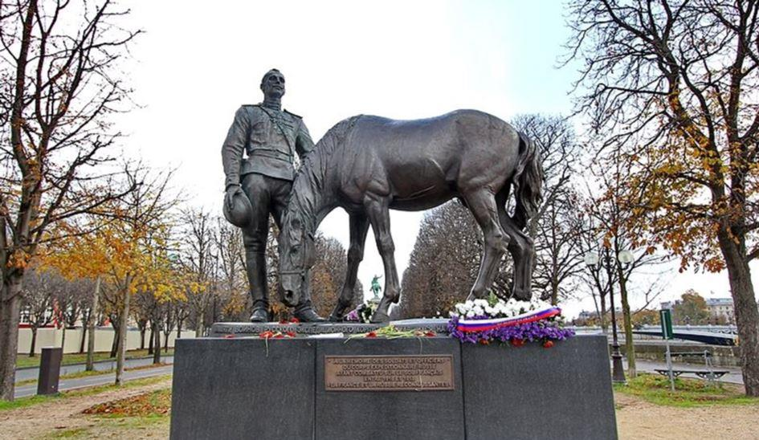
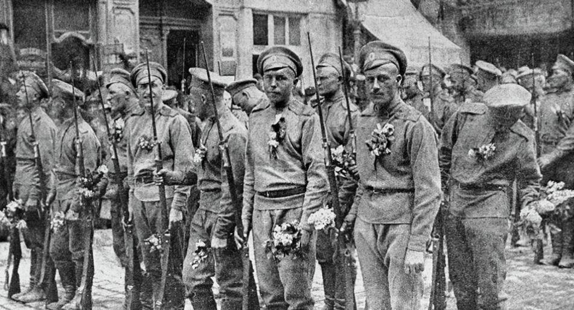
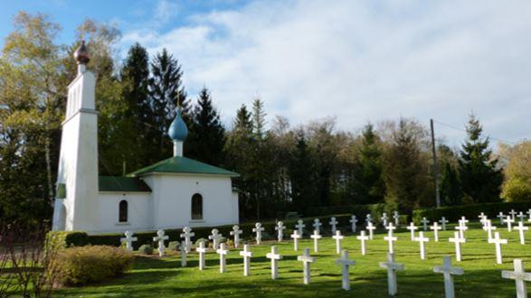

La commémoration du 11 novembre 1918 ne devait pas oublier la Russie
par Michel GRIMARD
Commémorer dans le respect de tous les combattants extérieurs morts pour la France, devrait s'imposer comme une évidence. Or, sous l'activisme de plusieurs influences, l'équité n'est pas respectée. Lors des hommages rendus aux soldats étrangers qui périrent pour sauvegarder notre liberté, la mémoire officielle est apparue trop souvent sélective.
Vladimir Poutine se recueille au Monument du Corps expéditionnaire russe à Paris le 11 novembre 2018À l'occasion du centième anniversaire de la première guerre mondiale, la France se devait d'honorer avec la même objectivité, tous ceux qui se sacrifièrent pour elle. L'opportunité s’est présentée de reconnaitre le rôle essentiel joué par la Russie, dans ce premier conflit mondial et de lui donner la juste place qui lui revient, dans la victoire de l'Alliance.
L'exaltation d'une Amérique seule salvatrice, a jusque-là marginalisé la Russie, faussant la vérité historique. L'engagement de ce pays a été occulté, l'attention étant volontairement dirigée sur celui des Etats-Unis.
Cette image déformée, présentée au peuple français, doit être rectifiée, pour qu'il prenne conscience du don de soi consenti par les combattants russes, sur le sol français et dans les Balkans. Mon but n'est pas de jouer les historiens, d'autres que moi sont plus habilités à le faire. Je souhaite seulement sortir de l'oublie ces soldats russes, qui ont bien mérité de la France et rappeler leur comportement héroïque sur les champs de bataille. Notre devoir nous commande de conserver en mémoire ce qu'ils ont apporté à notre pays, dans cette épreuve dramatique. A travers le rappel d'événements factuels, chacun pourra mieux appréhender la réalité et se forger une opinion.
Dans les deux affrontements mondiaux, l'entrée en guerre des Etats-Unis sera tardive et comme toujours, précédée par celle de la Russie. Si les deux pays jouèrent un rôle décisif, celui de la Russie devenue l'URSS fut minoré au point d'être quasiment ignoré, s'agissant du premier conflit. Pour le second il aurait été difficile de passer sous silence les batailles, de Stalingrad, juillet/février 1942 et de Koursk, juillet/août 1943, qui entamèrent l'invincibilité de l'Allemagne nazie et enclenchèrent sa débâcle. Durant cette guerre, l'URSS subira de très lourdes pertes humaines, tant militaires que civiles. Plus de 13 millions de militaires, 21 millions avec les civils, soit 10 % de la population d'avant-guerre. Les Etats-Unis déploreront 300 000 militaires, soit 0,2 de la population d'avant-guerre. A elles seules, les pertes militaires de l'URSS représenteront 88 % du total de celles des Alliés en Europe.
L'entrée en guerre des Etats-Unis en 1917, sera précurseur des motivations de son engagement, en décembre 1941. C'est seulement le 28 janvier 1917 que le premier contingent américain débarquera à Boulogne-sur-Mer. Dirigé par le Général John Pershing il comptait 177 soldats. Il sera suivi, le 28 juin de la même année, par la première division d'infanterie. Mais la positivité de l'entrée en guerre des Etats-Unis n'apparaîtra qu'à la fin du printemps 1918, les effectifs atteignant alors 800 000 hommes. Les premiers engagements des troupes américaines eurent lieu les 2 et 3 novembre 1917. Elles s'illustreront en 1918, par leur bravoure et leur efficacité, durant la grande bataille de la Marne. A son apogée, en octobre 1918, l'armée américaine disposait en France de 2 millions d'hommes. Sa contribution à la victoire fut conséquente. Elle dénombrera 120 000 morts dont 55 000 tués au champ d'honneur. L'impressionnante force de frappe que possédait sur notre sol l'armée américaine, au moment de l'armistice, se muera en levier diplomatique et reléguera la France, comme l'Angleterre, à un rôle mineur, lors des pourparlers qui suivront. A la Conférence de la paix, les Etats-Unis s'opposeront aux revendications territoriales françaises et italiennes. Pour atténuer l'amertume de la France ainsi que celle de l'Angleterre, le Président Wilson leur promettra la garantie militaire de son pays, face à une nouvelle agression allemande. Promesse non tenue. Il faudra attendre 2 ans, avant que l'Amérique intervienne en décembre 1941, contrainte par les événements.
Après une mobilisation générale, la Russie entrera rapidement en guerre le 1er août 1914. En décembre 1915 elle constituera une force de 50 000 hommes, qu'elle répartira en 4 brigades, destinées à combattre, pour la 1ère et la 3ème sur le front français, pour la 2ème et la 4ème dans les Balkans, sur le front de Salonique. La 1ère brigade débarquera à Marseille début 1916 et la 3ème 4 mois plus tard à Brest. Elles participeront aussitôt au combat où elles seront remarquées, car audacieuses et performantes. Ce comportement valeureux leur vaudra d'être cités à l'ordre de l'armée.
Sur le front d'Orient, la 2ème et la 4ème brigade ne démériteront pas, la 2ème étant citée à l'ordre de l'armée par le Général Sarrail. Une légion russe comprenant 4 bataillons totalisant environ 4 000 hommes, sera fondée en décembre 1917. Engagée dans de multiples actions, elle sera active jusqu'à l'armistice. En 1918 elle se distinguera par sa hardiesse, notamment au-cours de l'offensive du Chemin des Dames. Devenue par son courage "Légion d'honneur russe", elle sera citée deux fois à l'ordre de l'armée et son drapeau sera décoré par le Maréchal Foch. De 1916 à 1918 quelques 10 000 combattants russes tomberont sur le sol français, auxquels il faut ajouter ceux qui périrent dans les Balkans. Mais ce sont plusieurs millions de morts que les russes laissèrent dans l'affrontement direct russo-allemand. D'où la déclaration du Maréchal Foch "Si nous avons pu tenir de la Marne à Arras et finalement à l'Yser, c'est que la Russie de son côté retenait une notable partie des forces allemandes".
L'apport éloquent de la Russie à la victoire de la première guerre mondiale, montre qu'il apparaît fondé et équitable d'inviter ce pays à participer aux commémorations du centième anniversaire de l'armistice. Il aurait été bien mesquin et misérable, que des faits conjoncturels servent de prétextes, pour bannir la Russie de cet hommage à tous les combattants. Cette amputation ne pourrait que l'altérer, le dénaturer.
Remémorons-nous ce qui est écrit sur un monument érigé près de la nécropole de Saint-Hilaire-le-Grand dans la Marne « Enfants de France ! Quand l'ennemi sera vaincu et que vous pourrez librement cueillir des fleurs sur ces champs, souvenez-vous de nous, vos amis russes, et apportez-nous des fleurs ». Exauçons leurs vœux.
M.G.
Retrouvez les articles de Michel GRIMARD sur http://www.stoprussophobie.info/ que nous remercions pour l’autorisation de publication de cet article.
Partager cette page